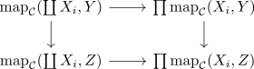

projection to the homotopy category preserves coproducts
Proposition
The projection to the homotopy category preserves products
Proof
follows from:
- where
Let $X_i \in \mathcal{C}$ be elements and suppose $\coprod X_i$ exists. Then $\coprod X_i$ is characterized by a natural equivalence.
using the quillen formula for infinity colimits in Anima we have to replace $\mathrm{map}_{\mathcal{C}}(X,-)$ pointwise by a cofibrant objects (nothing to do, simplicial Set as cofibrant object in the Kan-quillen structure) and morphisms by cofibrations (nothing to do) and then take the \(1\)-categorical coproduct.
But using hom of the homotopy category as path component of the mapping space and connected component functor from sSet preserves products we get
which is natural with respect to the second component, since a morphism $Y \rightarrow Z$ induces a diagram

commuting up to homotopy, in particular strictly commuting in the homotopy category